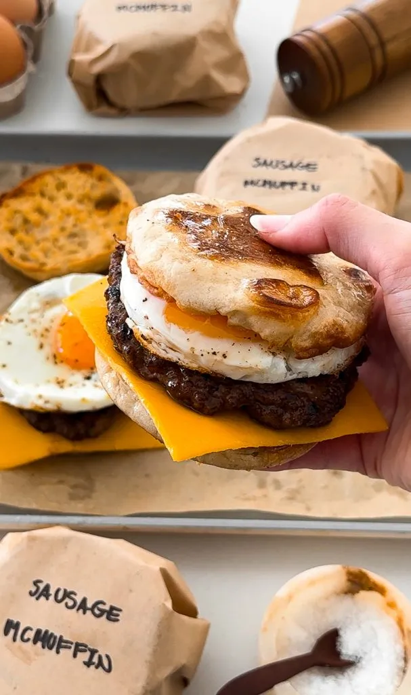
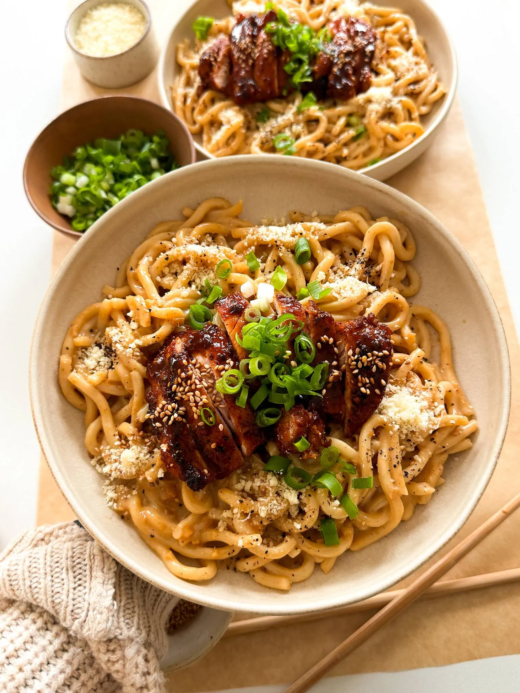
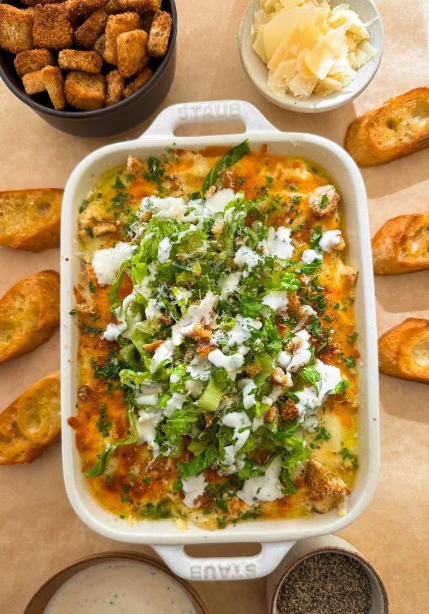

A Hungry Graphic Designer's Cookbook
Freezer Breakfast Sandwiches
Total Time:
1 Hour
Makes:
5 Sandwiches
Author:
Moribyan

Ingredients
The Sausage
- 1/2 pound ground beef 85/15
- 1/2 pound ground turkey
- 1 tablespoon brown sugar
- 1 teaspoon salt
- 1 teaspoon thyme
- 1 teaspoon sage
- 1 teaspoon paprika
- 1/2 teaspoon garlic powder
- 1/2 teaspoon onion powder
- 1/2 teaspoon black pepper
- 1 tablespoon olive oil
- 1 tablespoon unsalted butter
The Egg
- 5 large eggs
- salt, to taste
- black pepper, to taste
- oil spray
For Assembly
- 5 cheddar or American cheese slices
- 5 English muffins, buttered and toasted
Instructions
-
To a bowl, add ground beef, turkey, brown sugar, salt,
thyme, sage, paprika, garlic powder, onion powder,
and black pepper.
-
Combine together well and divide into 5 to 6
equal portions.
-
Shape each portion into a thin patty, slightly
larger than the size of the English muffin as it
will shrink as it cooks.
-
Heat a frying pan over medium heat. Add the olive
oil and butter and melt down.
-
Add the sausage patties, a few at a time to the pan
so they're not crowded.
-
Cook on one side for 3 to 4 minutes until seared and
then flip over and repeat. Remove from the pan when
fully cooked and repeat with the rest of
the sausages.
-
Preheat oven to 350°F. Line a tray with parchment
paper.
-
Cut the English muffins open in half and lay on
the tray. Brush with butter or spray with oil.
-
Toast the muffins in the oven for 6 to 8 minutes
until golden. Take it out of the oven.
-
To a large and flat frying pan over medium heat,
make the eggs. Grease the egg molds and crack an
egg into each one. Sprinkle with salt and black
pepper. Cover and cook until the whites are all
set. Remove the mold and take off the heat.
Repeat until you have 5 eggs cooked.
-
Assemble each sandwich in this order: bottom
English muffin, slice of cheese, sausage patty,
egg, top English muffin.
-
Wrap each one in sandwich paper and store in a
ziploc bag or container in the freezer.
-
To enjoy, pop in the microwave for 90 seconds
and enjoy warm!
Garlic Noodles With Teriyaki Chicken
Total Time:
45 minutes
Makes:
2 to 3
Author:
Moribyan

Ingredients
The Chicken
-
1 pound boneless skinless chicken thighs,
about 4 pieces
- 1/2 tablespoon chili powder
- 1 teaspoon smoked paprika
- 3/4 teaspoon onion powder
- 1/2 teaspoon salt
- 1/4 teaspoon black pepper
- 1 teaspoon red pepper flakes
- 1 tablespoon olive oil
The Teriyaki Sauce
- 2 teaspoons sesame oil
- 1/4 cup low-sodium soy sauce
- 2 tablespoons rice vinegar
- 3 tablespoons brown sugar
- 1/2 teaspoon black pepper
- 1 tablespoon minced garlic
- 2 teaspoons minced ginger
- 1 teaspoon cornstarch
- 1 tablespoon water
The Garlic Noodles
- 2 7-ounce packages cooked udon
- 6 tablespoons unsalted butter
- 1 1/2 tablespoons minced garlic
- 3 tablespoons low sodium soy sauce
- 1 tablespoon oyster sauce
- 1/4 cup heavy cream
- 1/4 cup grated parmesan
- dash of salt, to taste
- black pepper, to taste
- 1 teaspoon white sugar
For The Serving
- green onions, chopped
- toasted sesame seeds, garnish
Instructions
Making The Teriyaki Chicken
-
To a bowl, add the chicken thighs and season with
chili powder, smoked paprika, onion powder, salt,
black pepper, red pepper flakes, and
olive oil.
-
Mix together to marinade evenly and set aside.
-
To another bowl or measuring cup, add the
ingredients for the teriyaki sauce: sesame
oil, soy sauce, rice vinegar, brown sugar,
black pepper, minced garlic, and minced
ginger. Whisk together well.
-
Heat a large frying pan over medium-high heat.
Add the chicken thighs in, making sure not
to crowd them.
-
Sear on one side for 2 to 3 minutes and then
flip over and repeat. Then drop the heat to
medium or medium-low for 2 to 3 minutes again
just until the chicken is fully cooked in
the center.
-
Once cooked, remove the chicken from the pan.
-
To the same pan, add in the teriyaki sauce. Bring
to a soft boil and then drop the heat to simmer
for 2 to 3 minutes.
-
Mix together the cornstarch with water to make
a slurry and add it to the pan. Stir together
until the teriyaki sauce thickens.
-
Add the chicken back in and fully coat in the
teriyaki sauce on both sides. Take off the heat.
Making The Garlic Noodles
-
Heat a pan over medium heat and add the butter.
-
Once melted, add in the minced garlic and
saute for 2 to 3 minutes until fragrant
and toasted.
-
Add soy sauce, oyster sauce, cream, parmesan,
salt, black pepper, and white sauce. Mix
together well.
-
Toss in the noodles to fully coat the udon in
the butter sauce.
-
Plate the noodles with chicken on top and finish
off with a garnish of green onions and sesame
seeds to enjoy.
Caesar Salad Dip
Total Time:
30 minutes
Makes:
6 to 7
Author:
Moribyan

Ingredients
- 16 ounces shredded rotisserie chicken
For The Caesar Dressing
- 1 cup mayonnaise
- 1/4 cup buttermilk
- 1/4 cup whole milk
- 1 tablespoon lemon juice
- 1/2 tablespoon Worcestershire sauce
- 2 teaspoons minced garlic
- 2 teaspoons yellow mustard
- 1 teaspoon anchovy paste
- 1 teaspoon dried parsley
- 1/2 teaspoon black pepper
- 1/2 cup parmesan, freshly grated
For The Assembly
- 1 cup shredded mozzarella cheese
- 1/2 cup shredded cheddar cheese
- 1 teaspoon Italian seasoning, optional
- 1 cup thinly chopped romaine lettuce
- 1/2 cup croutons, crushed
- 1/4 cup grated parmesan
- 1/2 cup chopped cooked bacon, optional
Instructions
Making The Dressing
-
In a medium bowl, whisk together the mayonnaise,
buttermilk, whole milk, lemon juice,
Worcestershire sauce, minced garlic, yellow mustard,
anchovy paste, dried parsley, black pepper, and
freshly grated parmesan cheese until smooth
and well-combined.
-
In a large mixing bowl, add the shredded
rotisserie chicken.
-
Pour the homemade Caesar dressing over the chicken
and mix until the chicken is thoroughly coated
with the dressing.
Assembly and Baking
-
Preheat your oven’s broiler.
-
Transfer the chicken and dressing mixture
to an oven-safe baking dish.
-
Sprinkle the shredded mozzarella cheese and
cheddar cheese evenly over the top of the
chicken mixture. Add a dash of Italian
seasoning evenly across the top.
-
Place the baking dish under the broiler and
broil until the cheese is melted and bubbly,
about 3-5 minutes. Keep a close eye on it to
prevent burning.
The Serving
-
Remove the dish from the oven and let it
cool slightly.
-
Top the broiled dip with the thinly chopped
romaine lettuce, crushed croutons, grated
parmesan cheese, and chopped cooked bacon
if using.
-
Drizzle extra Caesar dressing over the top
if desired.
-
Serve the Caesar Salad Dip warm with your
favorite dipping options like crackers,
baguette slices, or vegetable sticks.
Enjoy!